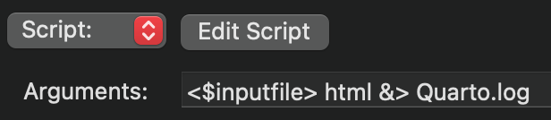
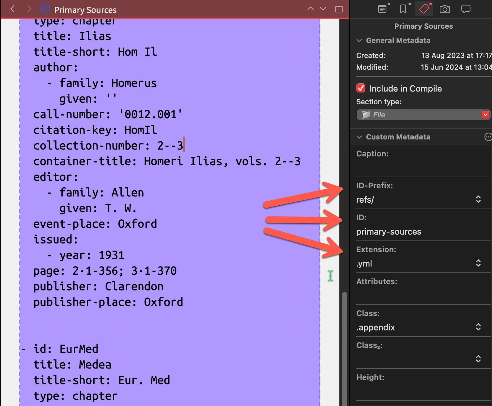

flowchart LR
A{Diagram} --> B[Section Type]
A --> C[Paragraph Style]
A --> D[Raw Markdown]
Hello, ScrivQ!
1 Instalation
Quarto is an open-source scientific and technical publishing system.
New to Quarto?
Install the Quarto extension for VS Code and Quarto extension for R Studio.
Check the “Hello, Quarto” Tutorial to learn how to create, build, and preview documents; or visit the get started guide to jump right in.
Find out more at Awesome Quarto, Quarto Extensions, Quarto on Github, RStudio Community, Stack Overflow, Twitter.
Quickstart üöÄ
- On macOS1 (), use Homebrew to
brew install quarto && brew install chromium. - On Windows (), use Chocolatey to
choco install quarto. - On Linux (), use your package manager to install quarto.
1 If you’re on a Mac, install Homebrew by pasting the following on the Terminal: /bin/bash -c "$(curl -fsSL https://raw.githubusercontent.com/Homebrew/install/HEAD/install.sh)".
Installation issues
Run a quarto check on your installation.
Some Python and R computations will require additional packages (cf. Listing 1).
Warning 1: Additional dependencies for computations
Additional steps might be needed to use computations, such as installing R and additional packages. Here are some packages that can be installed using R Studio and that will be needed for the computations in this project:
py_install(packages = "matplotlib")
install.packages("reticulate")
install.packages("markdown")
install.packages("tidyverse")
install.packages("kableExtra")
install.packages("downlit")
install.packages("xml2")2 ScrivQ
The ScrivQ template is designed to compile Quarto Books (PDF2, DOCX, and HTML) with zero configuration.
2 Please note that tinytex is also required for PDF.
When Quarto is installed…
Hit ⌘⌥E to publish your Quarto Book right away.
ScrivQ
- Download the latest release üöÄ.
- Sponsor this project ❤️.
- Take part in the discussion at the forum üí¨.
Thank you
@iandol for the exceptional ⌨️ Scrivomatic from which ScrivQ descends.
If you haven’t, check his writing in Scrivener tutorial.
Translating Quarto into Scrivener
In ScrivQ we can use Section Types or Paragraph Styles to create Sections, Tables, Equations, Figures, Listings, Callouts (Caution, Important, Note, Tip, Warning), and Amsthm environments (Conjecture, Corollary, Definition, Example, Exercise, Lemma, Proposition, Theorem). We can also use Character Styles to reference any of them. Keep reading to learn how.
3 Compiler Script

html to pdf / docx / epub etc.). It is embedded in this project’s Compiler format.
The script’s output is redirected &> to a Quarto.log file and this log file will be opened after the compiler finishes so you can check any details or debug any errors. This compiler script descends from Scrivomatic but with heavy adaptations to allow splitting the final document into sub-files. This seemingly simple task introduces many challenges, as footnotes and image data must be moved around before the file is split. Check the compile script if you want to know how this got solved. Please report any errors.
Warning
Ruby must be installed on Windows machines.
4 Citations
In ScrivQ, we use Citeproc to handle the bibliography and provide consistent output across different formats. Given Citeproc’s lack of features beloved by BibTeX users, we included Cite Tools to enable multipart bibliographies, provide a backref (see HyperRef), and access bibliographic data from sources (author, editor, translator, date, edition, number, and so on).
Deleting Cite Tools from ScrivQ will cause the compilation to fail.
Using Cite Tools in other projects
Install it with quarto install extension bcdavasconcelos/citetools.
4.1 Basic citations
The citation syntax is straightforward:
@Citekeyfor Author (Date) (an in-text citation);[@Citekey]for (Author, Date); and[-@Citekey]for (Date).Multiple citations can be grouped in brackets separated by semicolons
[@CitekeyA; @CitekeyB].The citation key is optionally followed by a locator, which can be a page number, a line number, a chapter number, or a section number, preceded by a comma.
The CSL style used by Citeproc will determine the presence (or absence) of parenthesis around the rendered citation. We favor a style that doesn’t use parenthesis, but that is up to you.
| Character Style | Markdown Source | Rendered output3 |
|---|---|---|
| Cite* | [-@Long2004] |
2004 |
| Cite* | [-@Long2004, p.15] |
2004, p. 15 |
| Cite | [@Long2004] |
LONG, 2004 |
| Cite | [@Long2004, p.15] |
LONG, 2004, p. 15 |
3 The rendered citation will appear only in the output document; but not in the Scrivener project.
Here is a short demonstration of the basic citation feature.
(Date, locator)
Long thinks [...] on the deliberations of the prudent person ([-@Long2004, p.17]).
Long thinks […] on the deliberations of the prudent person (2004, p. 17).
(Author, Date, locator)
...on the deliberations of the prudent person ([@Long2004, p.17]).
…on the deliberations of the prudent person (LONG, 2004, p. 17).
(Author, Date, locator; Author, Date, locator)
...on the deliberations of the prudent person ([@Long2004, p.17]; [@hoffman2014, p.15]).
…on the deliberations of the prudent person (LONG, 2004, p. 17; HOFFMAN & PRAKASH, 2014, p. 15).
4.2 Citation of specific fields
To inject the correct markup – [@Citekey]{.csl_field} – and allow us to cite different fields from our bibliographic entry, we rely on Character Styles (e.g. Cite Author, Cite Editor, Cite Issued, and so on).
We have stuck to the term fields, but the official terminology is CSL Variables, BibTeX Fields, and RIS Tags.

author, editor, translator (using CSL variables name conventions).
| Character Style | Markdown Source | Rendered Output |
|---|---|---|
| Cite Author | [@DA]{.author} |
Aristotelis |
| Cite Editor | [@DA]{.editor} |
Bekker |
| Cite Translator | [@DA]{.translator} |
Τατάκης |
| Cite Issued | [@DA]{.issued} |
1834 |
| Cite Title | [@DA]{.title} |
De Anima |
| Cite Title-short | [@DA]{.title-short} |
De An. |
| Cite Original-title | [@DA]{.original-title} |
περὶ ψυχῆς |
| Cite Publisher | [@DA]{.publisher} |
Reimer |
| Cite Publisher-Place | [@DA]{.publisher-place} |
Berlin |
Example
Aristotle's [@DA]{.original-title} ([@DA]{.title}) was first edited by [@DA]{.editor} in [@DA]{.issued}. In [@DABiehl]{.issued}, there was another edition by [@DABiehl]{.editor} (which was reprinted in [@DATheiler]{.translator}'s [@DATheiler]{.issued} translation).
Aristotle’s περὶ ψυχῆς (De Anima) was first edited by Bekker in 1834. In 1896, there was another edition by Biehl (which was reprinted in Theiler’s 1995 translation).
4.3 Multipart Bibliography

Where do I plug my bibliography?
There is no need to keep separate bibliography files in the system. Copy and paste the data from bibliography managers straight into Scrivener following the instructions below and you will be set!
Bibliography Formats
What if I don’t have a bibliography ready?
4 Zotero even offers an API to download shared libraries by merely accessing a link, such as https://api.zotero.org/groups/LibraryID/items?format=bibtex&limit=999 where LibraryID corresponds to the library’s 7-digit code (visible in the middle of the library URL).
4.3.1 How to manually create a multipart bibliography
- Using the Section Type File, we create a representation of our bibliography file to add the data (e.g. Primary Sources and Secondary Sources).
- On the Metadata panel we set the relative path (ID-Prefix + ID) and the extension (Extension) of the actual bibliography file that will be created upon Compile.
 3. We need to tell Quarto about the bibliography file by adding it to the _quarto configuration file (there is a bibliography section). 4. We can print the formatted bibliography using the ID (e.g. “primary-sources”) with the Paragraph Style Div Bibliography.
ARISTOTELIS. “De Anima.” In: BEKKER, I. (Ed.). Aristotelis Opera. Tran.: Β. Τατάκης. Berlin: Reimer, 1834.
4.3.2 How to automatically create a multipart bibliography
We can use the Section Type Bibliography to automate steps 3 and 4. This is very convenient for books that need the bibliography to print only once at the very end.
- Using the Section Type File, we create a representation of our bibliography file to add the data (e.g. Primary Sources and Secondary Sources).
- On the Metadata panel we set the relative path (ID-Prefix + ID) and the extension (Extension) of the actual bibliography file that will be created upon Compile.
- The metadata with the file path will be automatically added.
- The formatted bibliography will be printed in the same section as the data, with the same section title.
4.4 Backlinks
In Citeproc, link-citations control whether citations in the body of the text should be clickable links to the reference in the bibliography. Cite Tools takes it further and adds a backlink to each citation an entry has received in the document in a crescent ordinal fashion5. This allows the reader to easily arrive at sections of the text where the same reference was discussed and quickly see how many times each reference was used with the array of backlinks.
5 The reader will see the page number instead of a crescent ordinal number in some output formats, such as PDF.

Turning off undesired linking
If you want to avoid undesired linking when citing specific fields, turn link-fields into false
Bibliography links
link-citations: Hyperlink citations to the corresponding bibliography entries. Defaults to true.
link-fields: Hyperlink citations targeting specific CSL fields to the corresponding entries in the bibliography. Defaults to true.
link-bibliography: Hyperlink DOIs, PMCIDs, PMID, and URLs in bibliographies. Defaults to true.
lang: Affects the bibliography tags. Defaults to en-US.
5 Quarto
The internal Templates section is the starting point for new sections. You can choose from:
- Div
- Code
- Metadata
- Computation
- Diagram Dot
- Diagram Mermaid
- Equation
- Anchored Text (That is, a text section with an ID to allow cross-referencing)
- Text
- Break and Text
- Section
- Break and Section
- Heading
- Break and Heading
- Footnote
- Bibliography (section and file)
- File
Pick and configure any section type (use the metadata panel) or experiment with some ready-made examples below. Some elements can be created using Section Types, Styles, or Raw Markup. Find examples using each below along with a quick run-down of what you could do with the Section Types provided:
- Using a Section, create an Unnumbered Section or Appendix.
- Using a Div, create Amsthm elements (Conjecture, Corollary, Definition, Example, Exercise, Lemma, Proposition, Theorem), callouts (Caution, Important, Note, Tip, Warning), panels (Multiparts, Multipart Figure, Multipart Table, Figure) and column environments (Page, Page→Right, Page←Left, Screen, Margin).
- Using a Computation, create R Code and Python computations.
- Using a Text, create Callouts, Callouts (Raw), Code, Computation, Dot, Equation, Mermaid, Multipart Figure, Python, R, and Table.
- Create a Bibliography to place at the end of your text.
Tip
If you need to check the markup around a particular section type, see the Notes field of the corresponding template.
In this version of ScrivQ we prioritize manual ID setting. Select the correct ID-Prefix (e.g. sec-) and then fill the ID (e.g. xref) metadata field of different Section Types to allow cross-referencing using Scrivener placeholders such as @<\$Custom:ID-Prefix><\$Custom:ID> that would be replaced into \@sec-xref.
Cross-referencing: Setting the IDs
This works regardless of the element being cross-referenced (e.g. section, table, figure, listing) because this strategy ensures the citation will use the <\$Custom:ID-Prefix> pulled from the targeted element (e.g. sec-, tbl-, fig-, lst-), making it compatible with all element types.
Link anchor
To be less verbose, we have set up a replacement rule that allows a shorter label to be used as the link anchor.
s\crivlinkis replaced with<\$Custom:ID-Prefix><\$Custom:ID>.s\crivpathand$\!are replaced with<\$Custom:ID-Prefix><\$Custom:ID><\$Custom:Extension>.
5.1 Amsthm
| Element | Markdown Source | Rendered Output |
|---|---|---|
| Conjecture | [@cnj-demo] |
Conjecture 1 |
| Corollary | [@cor-demo] |
Corollary 1 |
| Definition | [@def-demo] |
Definition 1 |
| Example | [@exm-demo] |
Example 1 |
| Exercise | [@exr-demo] |
Exercise 1 |
| Lemma | [@lem-demo] |
Lemma 1 |
| Proposition | [@prp-demo] |
Proposition 1 |
| Theorem | [@thm-demo] |
Theorem 1 |
Conjecture 1 Demonstration of the Conjecture theorem environment using the Section Type Div with ID cnj-demo.
Corollary 1 Demonstration of the Corollary theorem environment using the Section Type Div with ID cor-demo.
Definition 1 Demonstration of the Definition theorem environment using the Section Type Div with ID def-demo.
Example 1 Demonstration of the Example theorem environment using the Section Type Div with ID exm-demo.
Exercise 1 Demonstration of the Exercise theorem environment using the Section Type Div with ID exr-demo.
Lemma 1 Demonstration of the Lemma theorem environment using the Section Type Div with ID lem-demo.
Proposition 1 Demonstration of the Proposition theorem environment using the Section Type Div with ID prp-demo.
Theorem 1 Demonstration of the Theorem theorem environment using the Section Type Div with ID thm-demo.
\[[ x^2 + y^2 = z^2 ]\]
5.2 Callouts
| Genus | Species | Markdown Source | Rendered Output |
|---|---|---|---|
| Callout | Caution | [@cau-caution] |
Caution 1 |
| Callout | Important | [@imp-important] |
Important 1 |
| Callout | Note | [@nte-note] |
Note 1 |
| Callout | Tip | [@tip-tip] |
Tip 1 |
| Callout | Warning | [@wrn-warning] |
Warning 2 |
Using styles, you can create normal or collapsed callouts.
Caution (collapsed)
This is a Callout Caution using a Paragraph Style.
Caution
This is a Callout Caution using a Paragraph Style.
Caution 1
Demonstration of a Callout Caution using the Section Type Div with class .callout-caution and with ID cau-caution.
Important 1
Demonstration of a Callout Important using the Section Type Div with class .callout-important and with ID imp-important.
Note 1
Demonstration of a Callout Note using the Section Type Div with class .callout-note and with ID nte-note.
Tip 1
Demonstration of a Callout Tip using the Section Type Div with class .callout-tip and with ID tip-tip.
Warning 2
Demonstration of a Callout Warning using the Section Type Div with class .callout-warning and with ID wrn-warning.
5.3 Diagrams
Similarly, we can create Dot and Mermaid diagrams using Section Types (Diagram Dot, Diagram Mermaid), Paragraph Styles (Diagram Dot, Diagram Mermaid), and Raw Mardown.
flowchart LR
A[Hard edge] --> B(Round edge)
B --> C{Decision}
C --> D[Result one]
C --> E[Result two]
flowchart LR
A[Hard edge] --> B(Round edge)
B --> C{Decision}
C --> D[Result one]
C --> E[Result two]
5.4 Equations
| Element | Markdown Source | Rendered Output |
|---|---|---|
| Equation | [@eq-demo-a] |
Equation 1 |
| Equation | [@eq-demo-b] |
Equation 2 |
\[t' = \frac{t - \dfrac{v}{c^{2}}x}{\sqrt{1 - \dfrac{v^{2}}{c^{2}}}} \tag{1}\]
\[t' = \frac{t - \dfrac{v}{c^{2}}x}{\sqrt{1 - \dfrac{v^{2}}{c^{2}}}} \tag{2}\]
5.5 Figures
“I propose a toast, to my self-control. You see it helpless, crawling on the floor.” Morphine, Cure For Pain (1993)
| Element | Markdown Source | Rendered Output |
|---|---|---|
| Figure | [@fig-image-a] |
?@fig-image-a |
| Figure (Multipart) | [@fig-panel-a] |
Figure 12 |
| Figure (Multipart) | [@fig-panel-a-item-a] |
Figure 12 (a) |
| Figure (Multipart) | [@fig-panel-a-item-b] |
Figure 12 (b) |

Caption style.

Div Section Type instead of raw markdown as shown here. ID, Class, and Attributes specific to the block [#fig-elephants2 .column-body layout-ncol=2 layout-valign="bottom"] are saved to Custom Metadata->ID, Class & Attributes, and then inserted into the markup for this chunk by the Section Layout at compile time.
5.6 Listings
require "unicode/name"
characters = %w(α β ἇ ᾇ ᾁ)
# characters = 'ἄ'
characters.each do |character|
puts character.unpack('U*').map { |i|
"U+#{i.to_s(16).rjust(4, '0').upcase}"
}.join
puts Unicode::Name.of character
end5.7 Tables
| Element | Markdown Source | Rendered Output |
|---|---|---|
| Table | [@tbl-demo-a] |
Table 10 |
| Table | [@] |
[@] |
| Table (Multipart) | [@] |
[@] |
| Table (Multipart) | [@tbl-panel-a-item-a] |
Table 12 (a) |
| Table (Multipart) | [@tbl-panel-a-item-b] |
Table 12 (b) |
| GRC | SKT |
|---|---|
| ἐν ἀρχὴ ἦν ὁ λόγος | आदौ वाद आसीत् |
Table as Section Type. The caption and the remaining attributes are added as part of the Section Type markup.”
| GRC | SKT |
|---|---|
| ἐν ἀρχὴ ἦν ὁ λόγος | आदौ वाद आसीत् |
Div. Note that Custom Metadata holds the cross-referencing label, layout class, and the attributes for this multipart table, which will be added by the Section Layout by the compiler, using the Scrivener placeholders: <\$custom:Class>, <\$custom:Attributes>.
| Element | Prefix | Markdown Source | Rendered Output |
|---|---|---|---|
| Equation A | eq | A | B |
| Equation A | eq | C | D |
| Listing A | lst | E | F |
| Element | Prefix | Markdown Source | Rendered Output |
|---|---|---|---|
| Equation B | eq | A | B |
| Equation B | eq | C | D |
| Listing B | lst | E | F |
5.8 Sections
The text sections can be referenced with Character Styles, and created with Paragraph Styles or Section Types. As before, all of these receive automatic IDs. Note that the unnumbered section cannot be referenced.
5.8.1 Section
This is an example of the Section section type.
5.8.2 Section {-}
This is an example of the Section {-} section type.
5.8.3 Heading
5.8.4 Heading + Break
5.8.5 Section + Break
This is an example of the Section + Break section type.
6 Templates and partials
Quarto Templates optionally edited in Scrivener
Users needing control over the parameters in the native Quarto templates shouldn’t have to deal with external files. We imported all the templates and partials for the main file types (TeX, HTML, Typst) so they can be edited directly in Scrivener. This is entirely optional.
PDF
And the Pandoc sub-partials:
7 Resources
- Bootstrap Icons - https://icons.getbootstrap.com - These are available in Quarto documents using the Shortcode Font Awesome style as in
. (There is also Shortcode Env, Shortcode Meta, Shortcode Var). - The Plain Person’s Guide to Plain Text Social Science - https://plain-text.co/index.html#introduction
- Quarto Reference - https://quarto.org/docs/reference/
- The easiest way to publish to Github Pages: Render to docs
- Example of Quarto Book - https://github.com/jjallaire/hopr/blob/master/_quarto.yml
- Quarto with GH Pages - https://tarleb.com/posts/quarto-with-gh-pages/
8 Final word
Consider sponsoring this project on Github. It would be great to have your support in this and you can rest assured that every cent will trickle down to ScrivQ features and ease of use.
Bibliography
Primary Sources
ARISTOTELIS. “De Anima.” In: BEKKER, I. (Ed.). Aristotelis Opera. Tran.: Β. Τατάκης. Berlin: Reimer, 1834.
Secondary Sources
Workflow
HOFFMAN, D. D.; PRAKASH, C. Objects of consciousness. Frontiers in Psychology, v. 5, p. 577, 2014. [1]
Songs
MORPHINE et al. Cure For Pain. : Cure For Pain.Rykodisc, 1993. Disponível em: <https://open.spotify.com/track/3hO9gaVixKDoYDrlTBrEWf?si=0668baf1aab345d4>
Paintings
DRAPER, H. J. Ulysses and the Sirens., 1909. [1]
Reuse
Citation
BibTeX citation:
@online{untitled,
author = {},
title = {Hello, {ScrivQ!}},
langid = {en}
}
For attribution, please cite this work as:
Hello, ScrivQ!